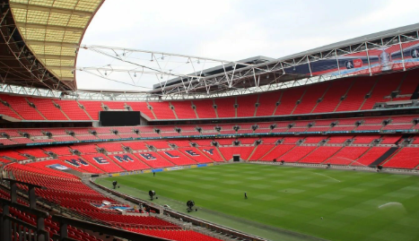
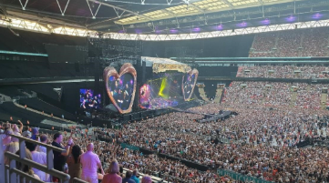
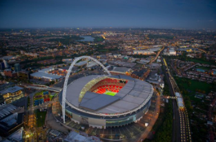
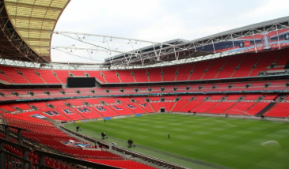

Wembley Arena for junior classes


Wembley Arena is an indoor sports and concert venue in Wembley, in the London Borough of Brent. The arena hosted competitions for the 1948 and 2012 Summer Olympics.
Arthur Elvin is the architect of this arena
Since its opening in 1934, Wembley Arena has become the third largest indoor concert venue and the second largest indoor arena in London. The most famous artists from around the world have performed here, representing a wide variety of genres.
After the Wembley Arena was renovated in 2006, the area in front of the building was named "The Square of Fame." Similar to the Hollywood Walk of Fame, famous artists who perform at Wembley Arena leave bronze plaques with their names and handprints on the square. The first star to leave her mark on the square was Madonna.
Wembley Arena for senior classes



The Wembley Arena is an indoor sports and concert complex in Wembley in the London borough of Brent. The arena hosted competitions at the 1948 and 2012 Summer Olympics.
The arena was built for the British Empire Games in 1934 by Arthur Alvin and was originally a swimming pool, as indicated by the first name — "Imperial Pool". The pool was used during the 1948 Olympic Games. The arena is used for sports, music, entertainment, and family events.
Since its opening in 1934, Wembley Arena has become the third-largest indoor concert venue and the second-largest indoor arena in London. It has hosted concerts by some of the world's most famous artists from a wide range of genres.
For example, it has hosted performances by:
The Beatles
Cliff Richard
Jimmy Savile
The Rolling Stones
Rod Stewart
Spice Girls
Beyonce
Taylor Swift
Madonna
Shakira
After the reopening of Wembley Arena in 2006 after renovation, the area in front of theFronton was called the "Hall of Fame". Like the Hollywood Walk of Fame, famous performers who perform at Wembley Arena leave bronze plaques with their names and handprints on the area. The first star to leave a mark was Madonna on August 1, 2006.
Since January 2006, the arena has held an annual snooker tournament called the Masters.
The arena is often used for indoor sports, such as boxing, MMA, and hockey. For example, a World Championship fight between Alan Minter and Marvin Hagler was held here. Marvin Hagler won, which caused riots based on race. The final of the Premier League Darts 2009 was also held here. James Wade beat Mervyn King.
The Wembley stadium has a bowl shape and its circumference is 1000 meters. The seats are protected by a roof that can open and cover the west and east sides. When open, the roof lets sunlight in so grass can grow on the football field.
The stadium is built on 4000 piles that go 35 meters deep. The building used 90,000 cubic meters of concrete and 23,000 tons of steel. The top of the stadium is a lattice arch with a 7-meter diameter. It weighs 1750 tons and has lights to help low-flying airplanes see it.
Inside, the stadium is equipped with platforms that can be used to transform it into an athletics arena.